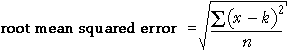
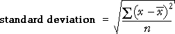
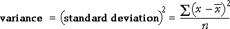
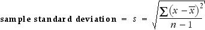

Distances from the centre of the distribution
The root mean squared error summarises the distances of data values from a target constant, k.

The standard deviation is a similar summary statistic that summarises the distances of the values from the centre of their distribution.

| The standard deviation summarises the spread of the values. |
The standard deviation is the most commonly used measure of spread, even though its definition is less easily explained to a non-statistician than the interquartile range.
| The standard deviation is a 'typical' distance of values from the centre of the distribution. |
Illustration of standard deviation
The diagram below shows 7 values and represents their squared deviations (distances from the mean) by squares.
The red square has area equal to the average area of the blue squares.
| The standard deviation is the side length of this red square. |
Drag the crosses to see how the standard deviation relates to the data values. (Note that the mean also changes when a value is dragged.)
If you drag the lowest cross to turn it into an outlier, you may notice that it has a disproportionately large influence on the standard deviation.
| The standard deviation is strongly affected by outliers, so it is not a robust summary of spread. |
Variance
The square of the standard deviation is called the variance of the data.

As with the mean squared error, the units of the variance are the square of the units of the original values (e.g. square kg). Its use as a summary of spread is therefore discouraged.
Sample standard deviation
The above definitions of the standard deviation and variance are more correctly called the population standard deviation and variance.
Two alternative definitions called the sample standard deviation and variance are often encountered. Indeed, when you read of a standard deviation in a report, it is likely to be the sample standard deviation that is intended. The only difference is that the sum of the squared deviations is divided by (n - 1) rather than n.
|  |
The sample standard deviation is denoted by the letter s and will be widely used in later chapters.
There is little practical difference between the two definitions provided the sample size is reasonably large. Even when the sample size is small, both definitions should lead you to the same conclusions about your data. (Otherwise, you are probably over-interpreting your data!)
In Excel
If the marks are contained in the cells A1 to A25 of a spreadsheet, the formula "=STDEVP(A1:A25)" will calculate the population standard deviation (with divisor n). The formula "=STDEV(A1:A25)" will calculate the sample standard deviation (with divisor n-1).